3D Floor Plans Onboarding let renovation pros learn the core tools inside a ready-made plan, so they could practice with guidance and continue on their own.
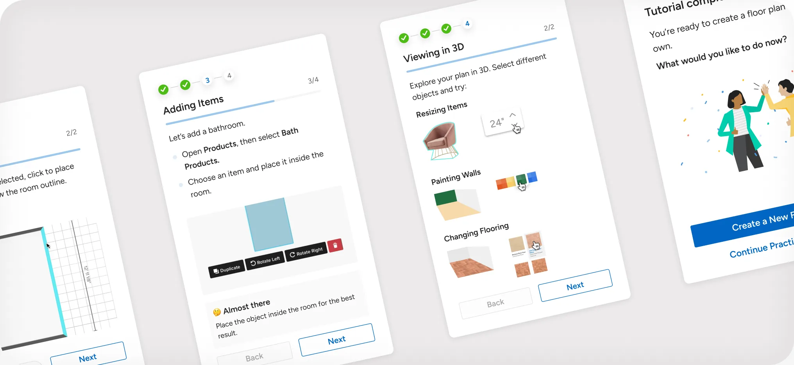
Context
Built for renovation professionals, Houzz Pro's 3D Floor Planner is a simpler alternative to traditional CAD tools. It lets pros create and present 2D and 3D designs using real products from Houzz's catalog, with the long-term vision of turning those designs directly into project estimates.
User voices
Where first-time users got stuck
Watching first-time users, the same needs kept surfacing: a clear first step, a safe way to practice, and confidence that each action led somewhere.
I can see all the tools...I don't know what I'm supposed to do first.
I want to try it without feeling like I might mess up a real plan.
...I'm not sure if I'm doing the right thing or just clicking around.
Users
Renovation professionals who are experts in their craft but may be unfamiliar with 3D tools, leaving them unsure where to begin.
JTBD
Build a simple plan to learn the core workflow, then confidently create a real one independently.
The problem
The Floor Planner was designed as an accessible alternative to complex CAD software, but its first-use experience left users facing a blank canvas, with key tools spread across menus and no clear path to creating a plan.
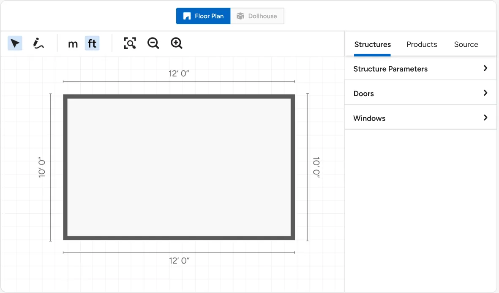
The goal
Increase Floor Planner adoption by helping pros practice the core workflow so they could continue independently.
Explorations
Houzz already had several onboarding patterns implemented across the product, but none suited the Floor Planner's open-ended canvas. We compared four approaches against three criteria: guidance had to stay close to the canvas, let users learn by doing, and leave room for exploration.
Tooltip Walkthrough
Easy to build with existing components, but tied to fixed UI and unable to guide actions performed directly on the canvas.
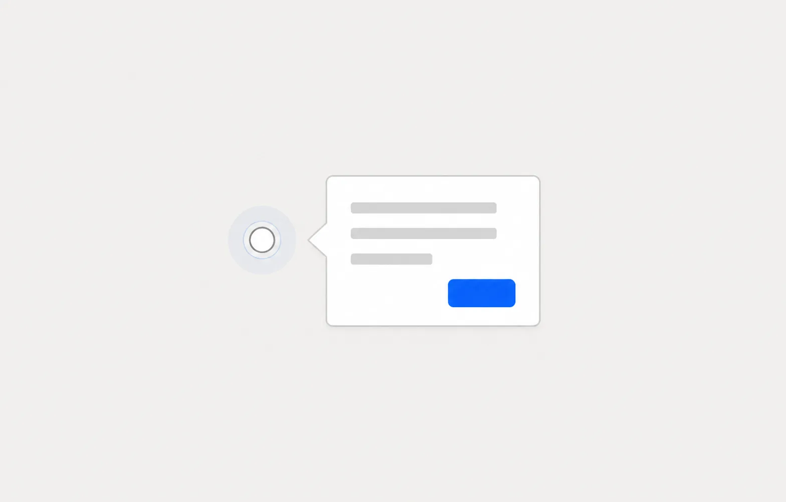
Step by step wizard
Provided a clear sequence, but felt rigid and took users out of the workspace instead of letting them practice in context.
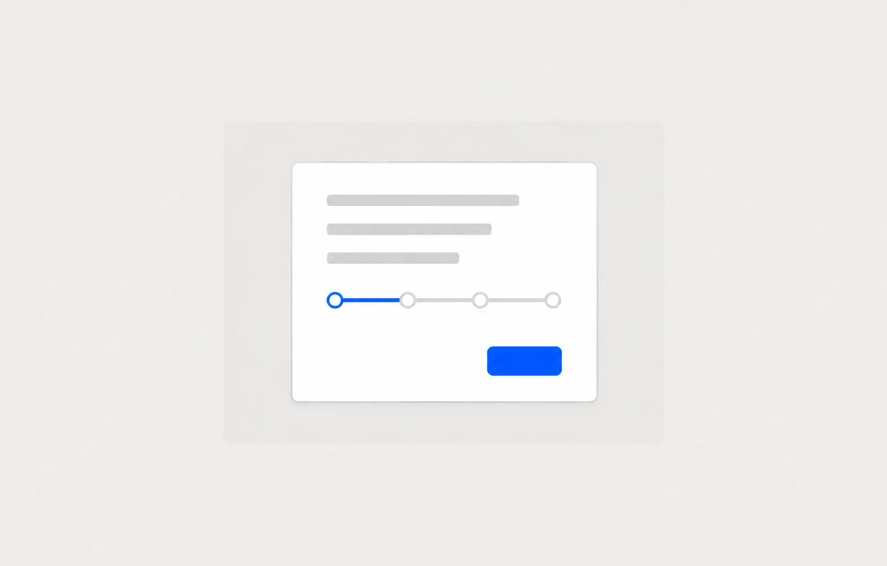
Wiki page
Kept each task in one scrollable flow, but only supported 2D and presented too much information before users could begin.
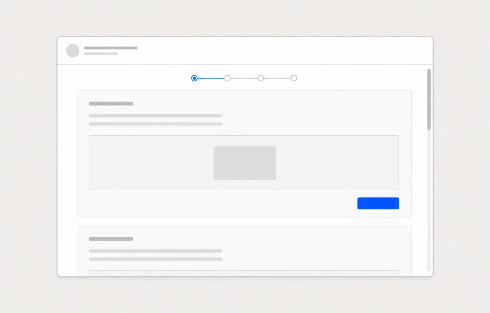
Chosen direction
We chose a hands-on flow built around a ready-made plan and divided it into four stages: navigating the canvas, using Select and Draw, adding products, and reviewing the result in 3D.
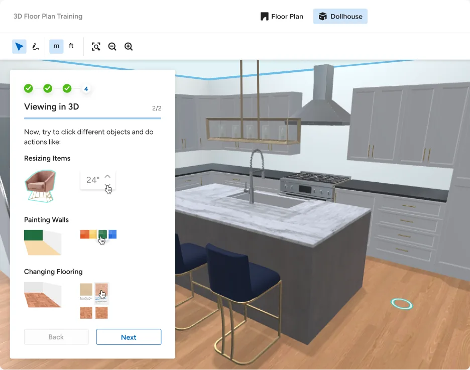
Starting with a ready-made plan removed the pressure of an empty canvas, especially for less tech-savvy users. Users could build confidence through simple actions before being asked to draw or make bigger changes.
Users first practiced zooming and moving around a furnished sample plan instead of starting from scratch.
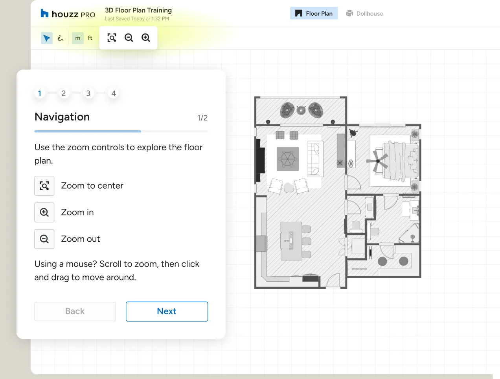
They then selected an existing item and moved it, introducing direct canvas interaction without asking them to create anything yet.
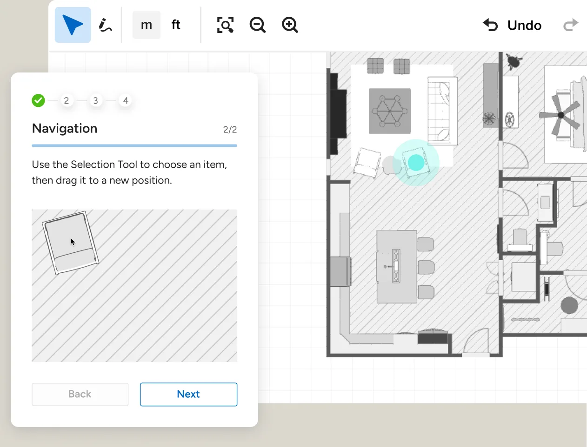
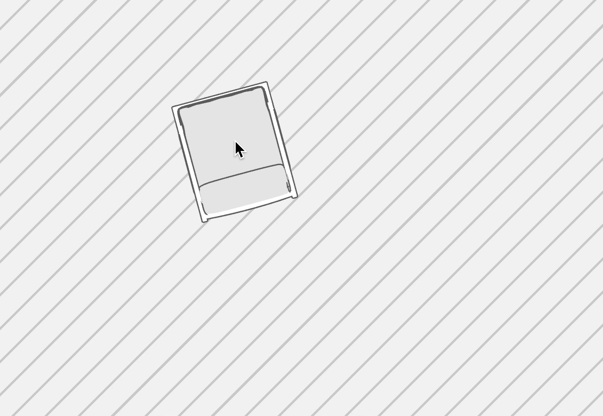
Next, users tried the Pen tool by drawing a room point by point.
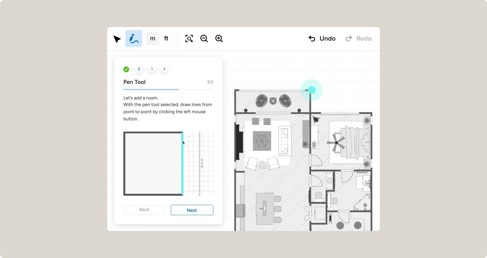
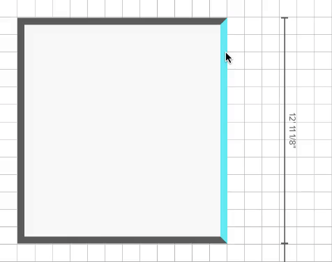
Users added a door, a generic product, and a marketplace item, learning where to find each one as they worked. Items needed to sit fully inside the room, so the tutorial pointed out when something needed adjusting. We later added snapping as a temporary solution, making precise placement less demanding.
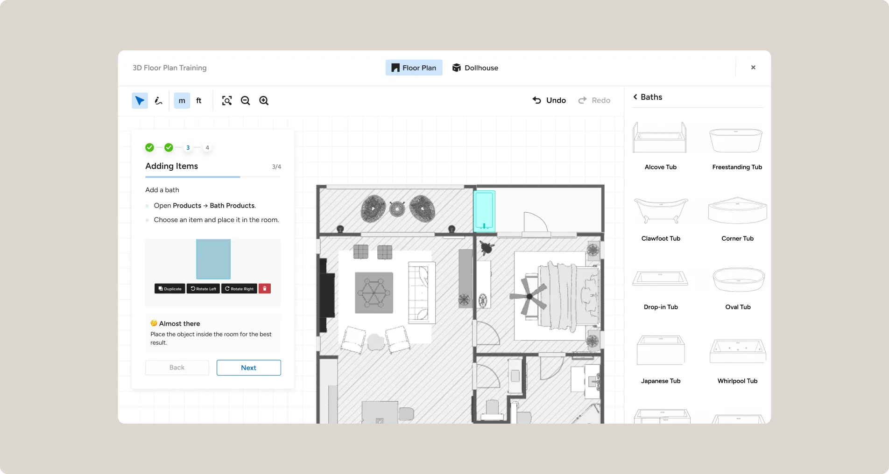
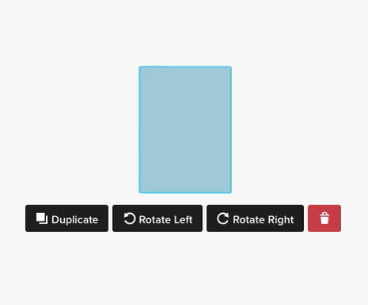
We saved the Dollhouse view for the end, where users could explore the space, resize items, change wall colors, and try different flooring.
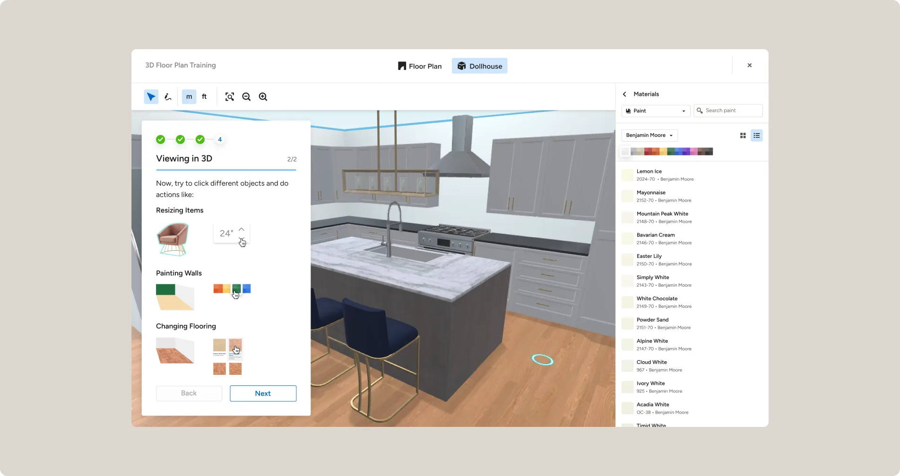
Between sessions
Progress was saved automatically, so users could leave at any point and return to the next unfinished step.
If users wanted to leave midway, we reassured them that their progress was saved and they could return to complete the tutorial at any time.
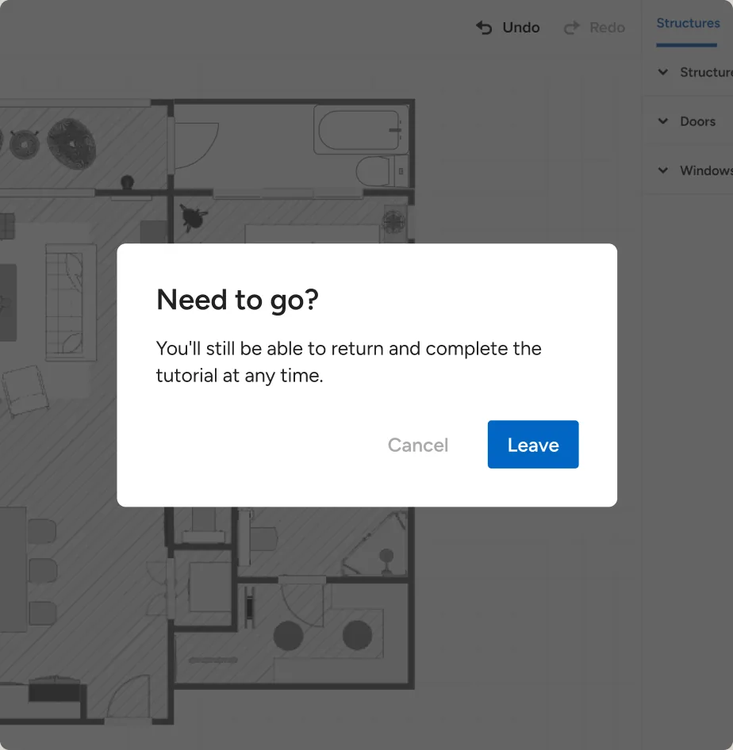
The sample plan was saved to their Floor Plans dashboard, with their tutorial progress shown at the top so they could pick up where they left off.
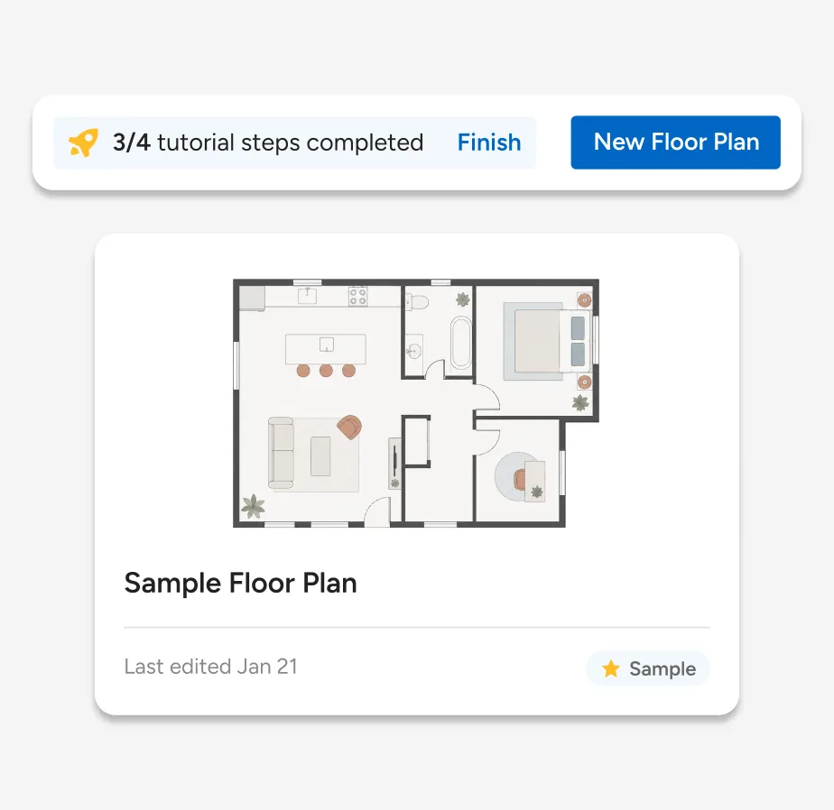
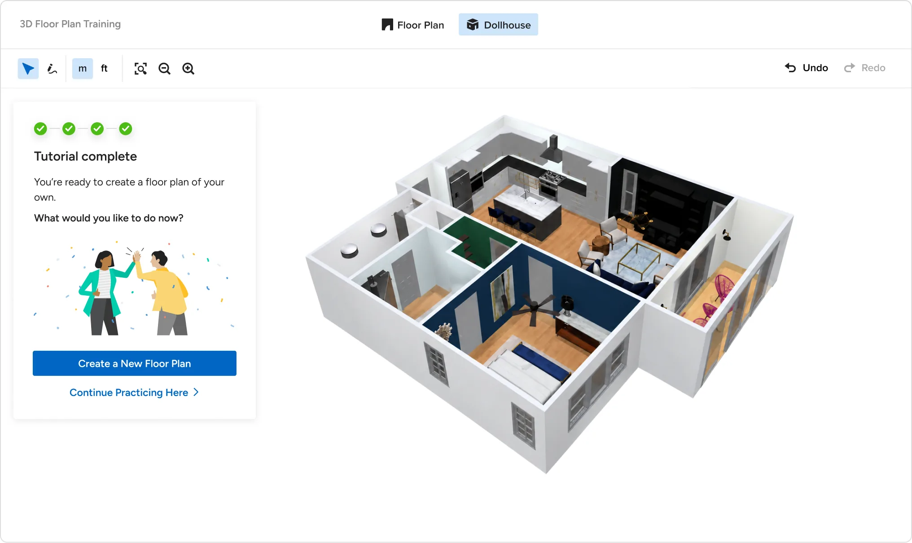
Impact
Floor plans have no single finished state, so we watched three things: how many pros opened the Floor Planner at all, how many finished the tutorial, and how many went on to start a plan of their own. All three moved after launch.
This project changed how I think about helping people into an unfamiliar product. Three things from it have stayed with me:
01
A first experience should reduce uncertainty before asking users to create from scratch.
02
Guidance works better when people can try it immediately, where the real work happens.
03
Good onboarding gives users enough confidence to continue without it.